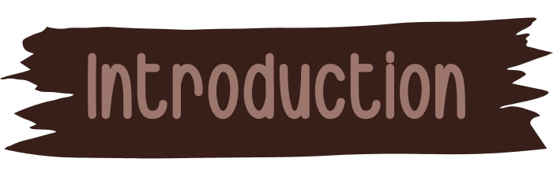

Welkam To The Deepest Thoughts
A lil Thing About Mama Bear
"Your work is going to fill a large part of your life, and the only way to be truly satisfied is to do what you love."
- Steve Jobs

I'm a digital artist with an insatiable passion for conjuring fantastical beings and immersive worlds. My artistic journey has been an enchanting exploration of the realms of fantasy character design.
Ayu Arini Khastarina
is my full name, used to called Ayu. Born in Bandung
3
rd
January 1992
, as the first Daughter and also first the grandchild in the family. My life is a canvas, and every brushstroke tells a story of relentless dedication, boundless creativity, and an unwavering commitment to transforming dreams into reality.
My Hobbies that Define me:
Playing games.
Playing games isn't just a pastime; it's a canvas where I unleash my strategic mind and revel in the thrill of exploration.
Drawing.
Drawing, allows me to give life to my imagination, creating visual stories that breathe with creativity.
Listening to Music.
Music is my sanctuary, where every note is a brushstroke on the canvas of my emotions.
Role-playing
Role-playing isn't just a hobby; it's a window to explore the myriad facets of human nature, delving into characters with depth and complexity.
"Do What You Love":
The wisdom of Steve Jobs, encapsulated in the timeless quote "Do what you love," is my guiding star. I believe that true satisfaction and greatness spring from the well of passion. In my world of digital art, this motto is not just a mantra; it's a way of life.